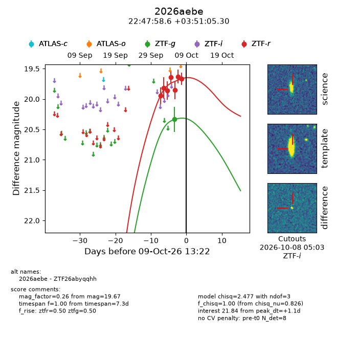
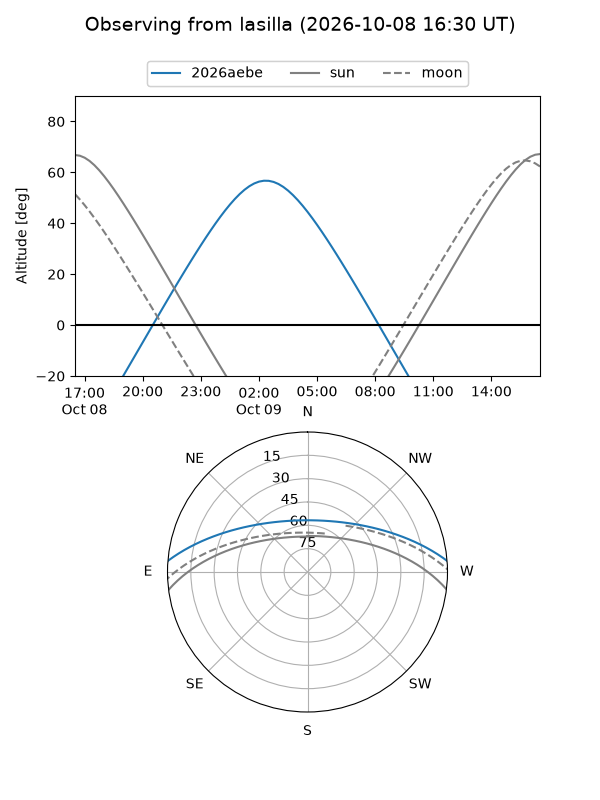
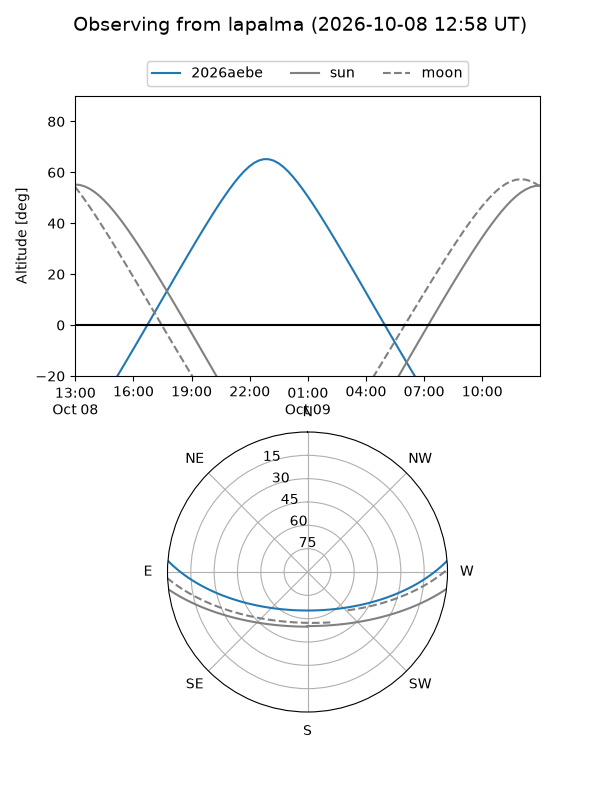
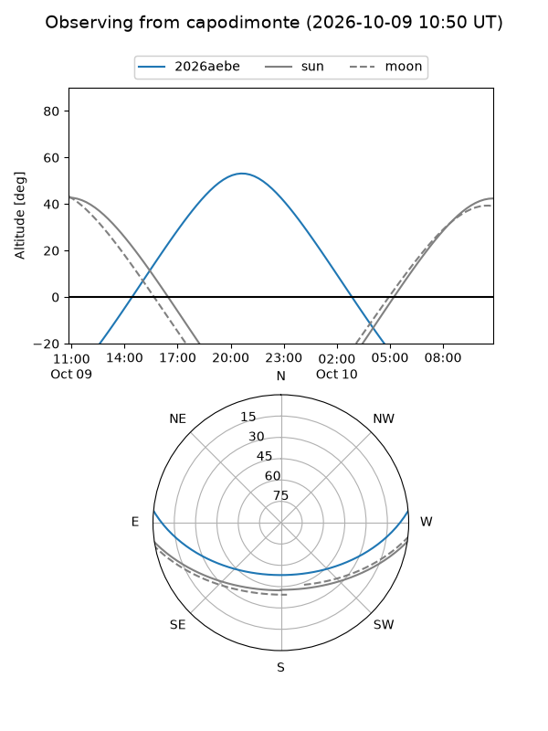
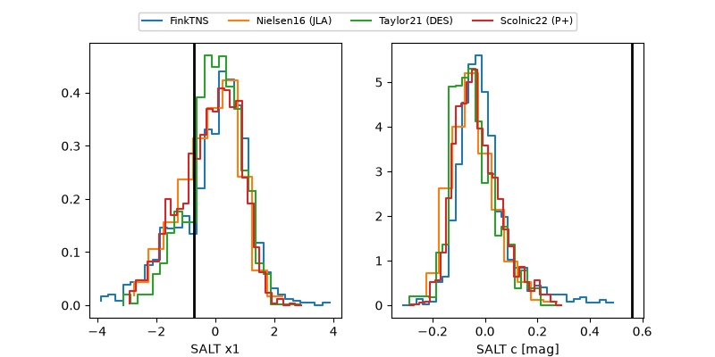

2026aebe
Target 2026aebe at 2026-10-09 13:25
Aliases and brokers:
FINK-ZTF: ztf.fink-portal.org/ZTF26abyqqhh
Lasair-ZTF: lasair-ztf.lsst.ac.uk/objects/ZTF26abyqqhh
ALeRCE-ZTF: alerce.online/object/ZTF26abyqqhh
YSE-PZ: ziggy.ucolick.org/yse/transient_detail/2026aebe
TNS name: wis-tns.org/object/2026aebe
Direct TNS query: direct search
alt names
ZTF26abyqqhh (ztf,fink_ztf)
2026aebe (tns,yse)
Coordinates:
equatorial (ra, dec) = 341.9943,+3.85147
equatorial (HMS+DMS) = 22:47:58.64,+03:51:05.30
galactic (l, b) = (74.2712,-47.01999)
Flags:
peak dt: +1.1
Photometry:
last ztfg=20.34, ztfr=19.67
1 ztfg, 7 ztfr detections
Lightcurve

Visibility



Additional plots
